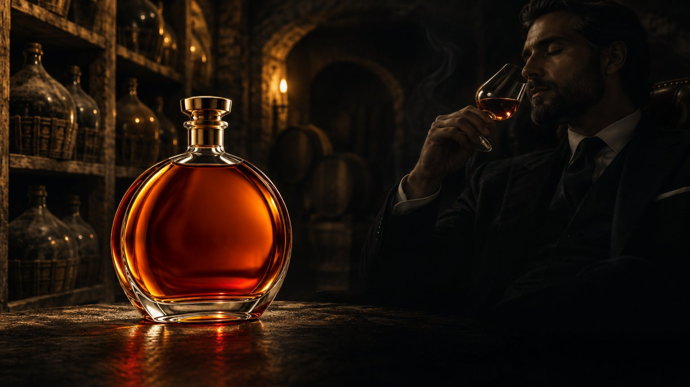

Maison fondée en 1862
Patience is not a virtue.
It is our recipe.
The range
Three ages, one cellar
-
V.S.
Four years in young oak. Pear, toasted almond, a bright finish.
4 yrs -
X.O.
Twenty years under the eaves. Fig, cigar box, and a long spiced close.
20 yrs -
V.S.O.P.
Eight years in seasoned casks. Apricot, vanilla pod, soft leather.
8 yrs
The cellar
What the angels leave behind
Each year, two percent of every cask rises into the rafters. The rest waits, darkening in Limousin oak, until the cellar master decides it is ready. Not before.
Visit the maison- Casks resting
- 3,400
- Oldest eau-de-vie
- 1924
- Cellar masters
- 6